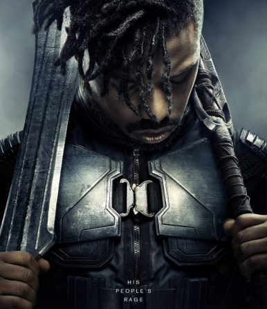

En plus d'être un film qui fait lapart belle aux héroines, Black Panther rend
hommage aux cultures africaine et afro-américaine. On y évoque le
racisme, la colonisation et les violences contre les afro-américains.
Ce film marque tout une génération,"c'est 100% africain et c'est parfait".
Voir plus >

KILLMONGER
La sauvagerie de N'Jadaka alors qu'il servait dans une
unité d'opérations noires de l'armée américaine lui a
valu le surnom de killmonger. d'origine Wakandaise,
et se sentant abandoné par sa nation, il cherche à
détroner T'Challa dans une quête vers le pouvoir.
Voir plus >
OKOYE
Okoye est le général des Dora Milaje (groupe d'élite
de femmes guerrières) et le chef des forces armées et
des renseignements de T'Challa, elle se joint à lui dans de
nombreuses aventures. Voir plus >
NAISSANCE D'UN PRINCE
T'Challa est né au wakanda, un pays isolationniste situé en Afrique, du monarque régnant T'chaka et de sa femme
Ramonda. Il a finalemnet eu une soeur cadette nommée Shuri. S'entrainant toute sa vie pour prendre la place de son père
en tant que prochain Black Panther, T'challa est devenu un homme avec un esprit très actif et malgré tous les efforts de
T'Chaka,une grande aversion pour la politique.
T'Challa est poli, respectueux et très attentionné envers les gens qu'il côtoie et qu'il considère comme ses amis.Il est
demontré qu'il a un grand respect envers les autres, en particulier envers son père,T'Chaka.Il honore la tradition et les
principes du Wakanda et est prêt à agir chaque fois que cela est nécessaire.A la mort de son père,il était disposé et prêt à
prendre la place qui lui revenait en tant que roi du Wakanda.Bien qu'il ne semble pas privilégier les combats,il a très vite
tenté de venger la mort de son père. Combattant honorable,T'Challa respecte ses adversaires et est prêt à épargner la vie
de ses ennemis.Cela dit, il n'est pas opposé à tuer ses adversaires dans un combat et n'essaie pas toujours d'eviter les
mesures mortelles de les neutraliser.
"Toute ma vie, je l'ai regardé porter le costume.Il pouvait soulever un homme àune seule main et courir aussi vite
qu'un zèbre.Puis il m'a dit qu'il était trop vieux pour continuer à endosser le rôle de Black Panther; il me l'a alors
passé afin de simplement rester roi.
-Il me disait qu'il ne pouvait plus rentrer dans le costume. "
-T'Challa et Zuri
UN HEROS VENGEUR
"La mort, dans notre culture, n'est pas la fin. Pour nous, c'est plutôt un point de départ. Le défunt n'a qu'à tendre les
bras; et Bast et sekhmet le guident jusqu'à l'entrée de la grande vallée où il résidera à tout jamais.
-C'est une vision très pacifique.
-A l'image de mon père. Je ne suis pas mon père. "
-T'Challa et Natasha Romanoff
Suite à la mort de son père dans l'attentat à la bombe orchestré par Helmut Zemo, terroriste souhaitant la chute des
Avengers, T'Challa avait entrepris de tuer le soldat de l'hiver, qui était largement considéré (à tort) comme responsable de
l'attaque. A cours de sa tentative de trouver le soldat de l'hiver, Black Panther avait rejoint une guerre civile entre les
Avengers, oùil s'était rangé du côté d'Iron Man. T'Challa est alors animé par son désir de vengeance de la mort de son père,
ce qu'il partage avec Iron Man, tous deux victimes de l'assassinat de leurs parents.
Cependant, Black Panther apprend finalemnet en capturant Zemo,que c'était lui le seul responsable de la mort de son
père, et que le Soldat de l'hiver n'était alors qu'une arme entre les mains de Zemo. Se rendant compte de la supercherie
ainsi que la voie sombre de la vengeance. T'Challa se promet de ne plus permettre aux désirs de vengeance de le
consumer à nouveau.
" Quelle est la meilleure façon de protéger le Wakanda? Je dois devenir un grand roi baba, comme tu l'étais.
-Tu devras lutter. Pour ça, il te faudra t'entoure de personnes de confiance. Tu es un homme bon, avec un grand
coeur. C'est difficile pour un homme bon d'être roi. "
-T'Challa et T'Chaka
UN HEROS PROTECTEUR ET JUSTICIER
"Tu es eu tort ! vous avez tous eu tort ! Il ne fallait pas tourner le dos au reste du monde. Nous avons laissé la peur
d'être découverts nous empêcher de faire ce qui était juste. Non père, non je ne peux pas rester ici avec toi. Tant qu'il
sera sur le trône, je ne saurai trouver le repos. C'est un monstre et c'est nous qui l'avons crée.Il faut que je reprenne
le pouvoir, il le faut ! Il faut que je corrige ces injustices. "
-T'Challa à T'Chaka
Il y a des siècles, alors que cinq tribus africains se disputaient une météorite composée de vibranium métallique
extraterrestre, un chaman guerrier Bashenga,guidé par la déesse panthère Bast, ingère une herbe en forme de coeur
affectée par le métal et acquiert des capacités surhumaines. Devenu le premier "Black Panther", il unit toutes les tribus sauf
la tribu des Jabari, et forme la nation du Wakanda. Au fil du temps, les Wakandais utilisent le vibranium pour dévelloper
une technologie de pointe tout en s'isolant du reste du monde et en se faisant passer pour un pays du tiers monde.
Après les événements qui se sont déroulés dans "captain America: Civil War", T'Challa revient chez lui prendre sa place sur
le trône du Wakanda, une nation africaine technologiquement très avancée. Néanmoins, T'Challa se retrouve rapidement
mis au défi pour obtenir le trône. Une fois couronné il espère accomplir une tâche que son père n'aura pas pu mener à son
terme: capturer Ulysse Klaw un voleur qui a volé du vibranium. cette traque l'amènera à faire équipe avec l'agent dela CIA
Everett Ross et les membres de la Dora Milaje, les forces spéciales du Wakanda. Il découvrira également un secret enfoui
sur sa famille qui lui fera prendre conscience de la nécessité de s'ouvrir au monde exterieur afin de ne pas répeter les
erreurs de son père.
T'Challa
Acteur: Chadwick Boseman
Apparition: Captain America civil War (2016)
Espèce: Humain
Nationalité: Wakandais
sexe: Homme
Décès: 31 mai 2018(victime du snap; ressuscité par Hulk
en 2023) (2016)